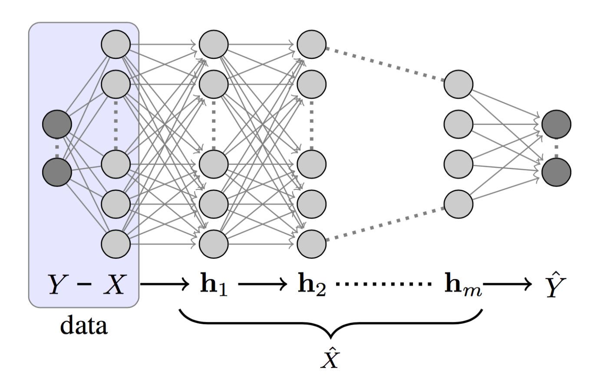
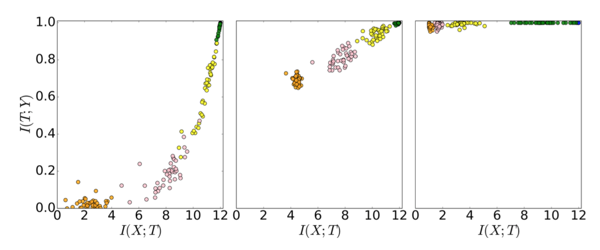
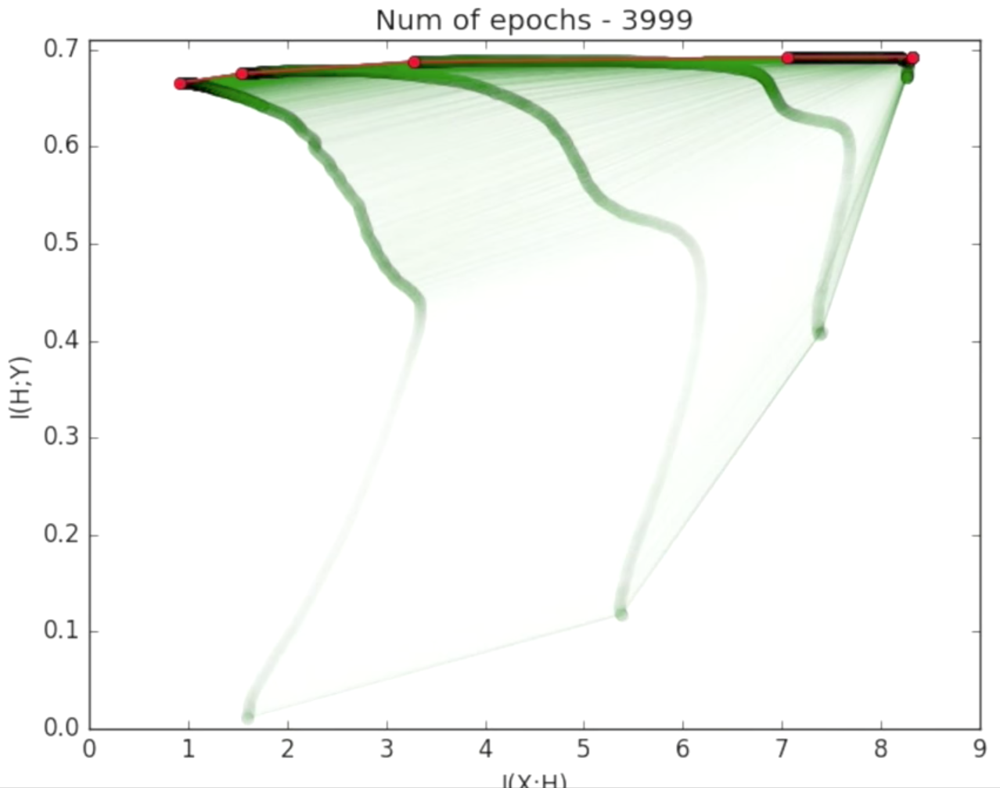
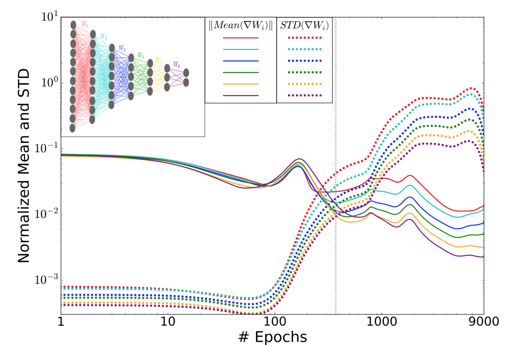
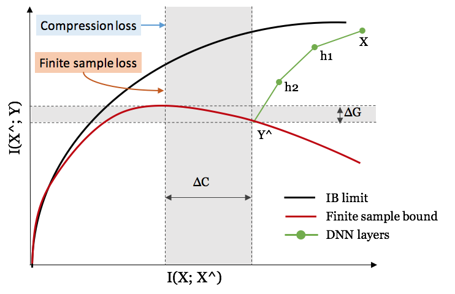
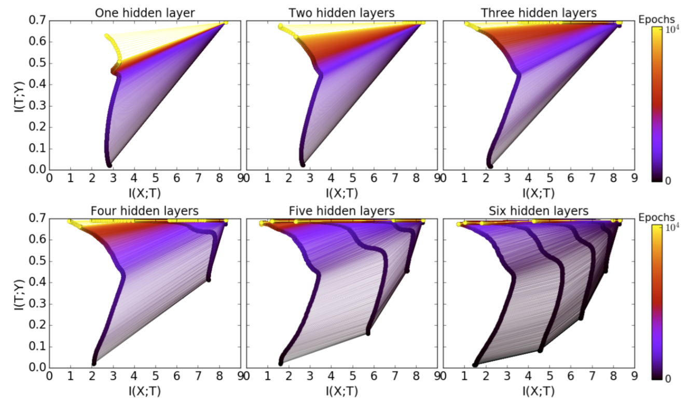
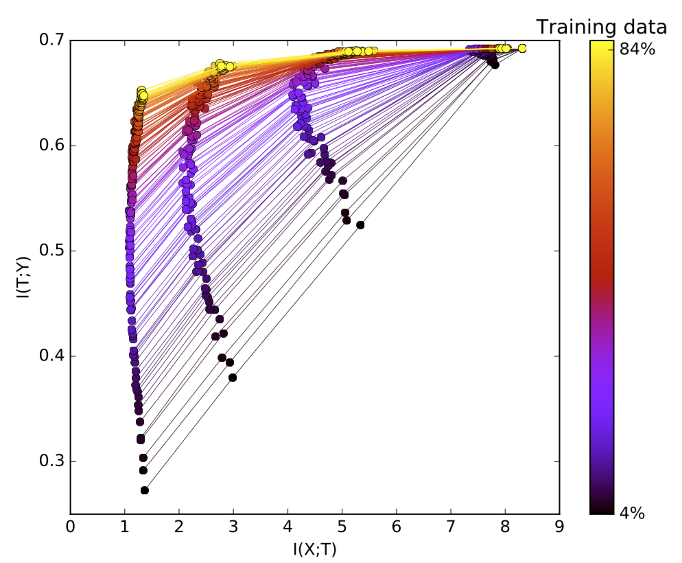

目录
Naftali Tishby 教授于 2021 年去世。希望这篇文章能让更多人了解他提出的信息瓶颈这一精彩思想。
最近我观看了 Naftali Tishby 教授的演讲 《深度学习中的信息论》，觉得非常有启发。他展示了如何运用信息论来研究深度神经网络在训练过程中的增长与变换。借助 Information Bottleneck (IB) 方法，他为深度神经网络（DNN）提出了一种新的学习界，因为传统学习理论在参数量呈指数级增长时已经失效。另一个敏锐的观察是，DNN 的训练包含两个截然不同的阶段：首先，网络会充分表示输入数据并最小化泛化误差；随后，它会通过压缩输入的表示来“遗忘”无关细节。
本文大部分内容来自 Tishby 教授的演讲以及 用信息论剖析深度学习。
基础概念
马尔可夫过程是一种“无记忆”（也称“马尔可夫性质”）的随机过程。马尔可夫链是包含多个离散状态的一类马尔可夫过程。这意味着，过程未来状态的条件概率仅由当前状态决定，而与过去状态无关。
KL 散度用来衡量一个概率分布 p 与另一个期望概率分布 q 之间的差异程度。它具有不对称性。
当 p(x) 与 q(x) 在处处相等时，D_{KL} 达到最小值 0。
互信息衡量两个随机变量之间的相互依赖程度。它量化了通过一个随机变量能获得关于另一个随机变量的“信息量”。互信息具有对称性。
对于任意马尔可夫链 X \to Y \to Z，我们有 I(X; Y) \geq I(X; Z)。
深度神经网络可以看作一个马尔可夫链，因此当我们沿着网络层向下移动时，该层与输入之间的互信息只会不断减少。
对于两个可逆函数 \phi、\psi，互信息仍然成立：I(X; Y) = I(\phi(X); \psi(Y))。
例如，如果我们打乱 DNN 某一层的权重，不会影响该层与其他层之间的互信息。
将深度神经网络视为马尔可夫链
训练数据是从联合分布 X 和 Y 中采样的观测值。输入变量 X 和各隐藏层的权重都是高维随机变量。在分类任务中，真实目标 Y 和预测值 \hat{Y} 是维度较小的随机变量。

如果我们像图 1 那样将 DNN 的隐藏层标记为 h_1, h_2, \dots, h_m，就可以把每一层视为马尔可夫链的一个状态： h_i \to h_{i+1}。根据数据处理不等式，我们有：
DNN 的设计目标是学会如何描述 X 以预测 Y，并最终将 X 压缩成只保留与 Y 相关的信息。Tishby 将这一过程描述为“相关信息的逐次提炼”。
信息平面定理
DNN 对 X 拥有一系列内部表示，即一组隐藏层 \{T_i\}。信息平面定理通过编码器和解码器信息来刻画每一层。编码器是对输入数据 X 的表示，而解码器则将当前层的信息翻译成目标输出 Y。
具体来说，在信息平面图中：

图中每个点标记了一次网络模拟中某一隐藏层的编码器/解码器互信息（实验未使用正则化、无权重衰减、无 dropout 等）。随着对真实标签了解的增加（精度提升），这些点会向上移动，这符合预期。在早期阶段，隐藏层会学习大量关于输入 X 的信息，但随后它们开始进行压缩，遗忘输入的某些信息。Tishby 认为“学习中最重要的部分其实是遗忘”。可以观看这个 精彩视频，它展示了各层的互信息度量如何随训练轮次变化。

两个优化阶段
跟踪每层权重的归一化均值和标准差随时间的变化，也能揭示训练过程的两个优化阶段。

在训练初期，均值的量级比标准差大三个数量级。经过足够多轮训练后，误差趋于饱和，标准差随后变得更加嘈杂。离输出层越远的层，噪声越大，因为噪声会通过反向传播过程被放大和累积（并非由层的宽度导致）。
学习理论
“旧”泛化界
经典学习理论定义的泛化界为：
该定义表明，训练误差与泛化误差之差由假设空间大小和数据集大小的一个函数界定。假设空间越大，泛化误差就越大。如果你对泛化界感兴趣，我推荐这篇机器学习理论教程 第一部分 和 第二部分。
然而，这一界对深度学习不再适用。网络越大，需要学习的参数就越多。按照这个泛化界，更大的网络（更大的 d）会得到更差的界。这与我们直观认为更大网络表达能力更强、性能应该更好的认知相悖。
“新”输入压缩界
为了解决这一反直觉的现象，Tishby 等人为 DNN 提出了一种新的输入压缩界。
首先令 T_\epsilon 为输入变量 X 的一个 \epsilon-划分。该划分根据标签的同质性将输入压缩为较小的单元格，所有单元格共同覆盖整个输入空间。如果预测输出为二元值，我们可以用 2^{\vert T_\epsilon \vert} 来代替假设类的基数 \vert H_\epsilon \vert。
当 X 较大时，X 的大小近似为 2^{H(X)}。\epsilon-划分中的每个单元格大小为 2^{H(X \vert T_\epsilon)}。于是我们有 \vert T_\epsilon \vert \sim \frac{2^{H(X)}}{2^{H(X \vert T_\epsilon)}} = 2^{I(T_\epsilon; X)}。此时输入压缩界变为：

网络规模与训练数据规模
更多隐藏层的好处
拥有更多层能带来计算上的优势，并加速实现良好泛化所需的训练过程。

通过随机松弛实现的压缩：根据 扩散方程，第 k 层的松弛时间正比于该层压缩量 \Delta S_k 的指数：\Delta t_k \sim \exp(\Delta S_k)。我们可以计算该层的压缩量为 \Delta S_k = I(X; T_k) - I(X; T_{k-1})。由于 \exp(\sum_k \Delta S_k) \geq \sum_k \exp(\Delta S_k)，我们可以预期：隐藏层越多（k 越大），所需的训练 epoch 数会呈指数级减少。
更多训练样本的好处
拟合更多训练数据需要隐藏层捕获更多信息。随着训练数据规模增大，解码器互信息（回想一下，它与泛化误差直接相关）I(T; Y) 会被向上推，并更接近理论上的信息瓶颈界。Tishby 强调，决定泛化能力的是互信息，而不是层的大小或 VC 维，这与传统理论不同。

引用格式：
@article{weng2017infotheory,
title = "Anatomize Deep Learning with Information Theory",
author = "Weng, Lilian",
journal = "lilianweng.github.io",
year = "2017",
url = "https://lilianweng.github.io/posts/2017-09-28-information-bottleneck/"
}
参考文献
[1] Naftali Tishby. Information Theory of Deep Learning
[2] Machine Learning Theory - Part 1: Introduction
[3] Machine Learning Theory - Part 2: Generalization Bounds
[4] New Theory Cracks Open the Black Box of Deep Learning by Quanta Magazine.
[5] Naftali Tishby and Noga Zaslavsky. “Deep learning and the information bottleneck principle.” IEEE Information Theory Workshop (ITW), 2015.
[6] Ravid Shwartz-Ziv and Naftali Tishby. “Opening the Black Box of Deep Neural Networks via Information.” arXiv preprint arXiv:1703.00810, 2017.